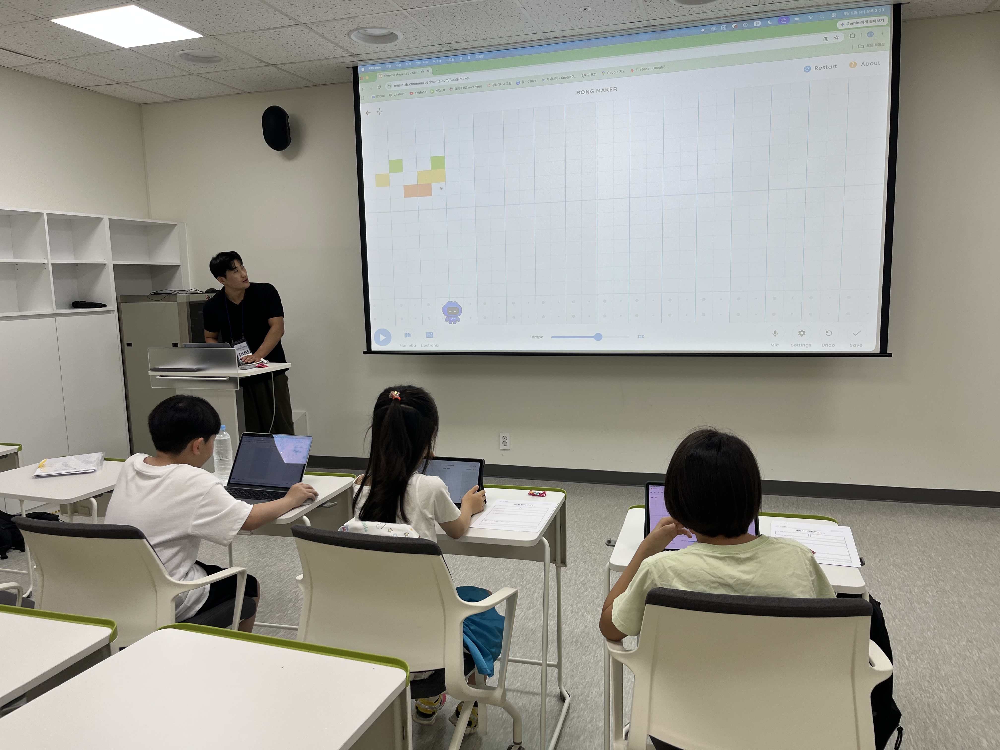

Education · AI Literacy
경기도서관AI 썸머스쿨교육 멘토
아이들이 직접 체험하고 판단하며 결과물을 만들어내는 AI 수업을 기획하고 운영했습니다.

AI를 설명하기보다,
직접 경험하게 했습니다.
경기도서관 AI 썸머스쿨에서 주강사와 보조강사로 참여해, 단순히 AI 도구 사용법을 알려주는 것을 넘어 아이들이 직접 체험하고 판단하며 결과물을 만들어내는 수업을 기획하고 운영했습니다.
Teaching Roles
주강사로는 AI 음악·광고송 만들기와 AI 윤리 탐험대 수업을 진행했습니다. 보조강사로는 AI 캐릭터 만들기, AI 동화 만들기, AI 의사놀이 수업에 참여하며 수업 운영과 학습 활동을 함께 지원했습니다.
Curriculum & Materials
수업 목적과 대상 연령에 맞춰 강의 흐름을 설계하고, Canva를 활용해 PPT·활동지·상황 카드·질문 카드 등 수업 자료를 직접 구성했습니다. 학생들이 AI의 가능성과 한계를 자연스럽게 경험할 수 있도록 활동 중심의 수업 구조를 만들었습니다.
Learning by Making
생성형 AI, Quick, Draw!, Chrome Music Lab 등 다양한 AI·디지털 도구를 활용했습니다. OX 퀴즈와 모둠 활동, 결과물 제작 및 발표를 통해 학생들이 도구를 직접 사용하고, 만든 결과를 함께 살펴보도록 진행했습니다.
AI Ethics Expedition
AI가 틀리거나 그럴듯한 답을 만들어내는 상황을 직접 체험한 뒤, 개인정보·저작권·허위정보·온라인 예절을 OX 활동과 토론으로 연결했습니다. 정답을 일방적으로 전달하기보다 “왜 그렇게 생각했는가?”, “누가 피해를 볼 수 있는가?”와 같은 질문으로 스스로 판단할 수 있도록 도왔습니다.
Class Operation
학생별 이해도와 참여 인원, 수업 진행 속도에 따라 기존 계획을 유연하게 조정했습니다. 보조강사와 역할을 나누고 전체 수업 시간과 활동 흐름을 관리하며, 현장 상황에 맞는 맞춤형 수업 운영을 경험했습니다.
What I Learned
AI를 ‘설명하는 것’보다 학습자가 직접 사용하고, 질문하고, 판단하게 만드는 체험 중심 교육 설계와 현장 운영의 중요성을 배웠습니다. AI 생성 결과의 오류와 한계도 수업 안에서 함께 생각해 볼 수 있는 학습 요소로 활용했습니다.